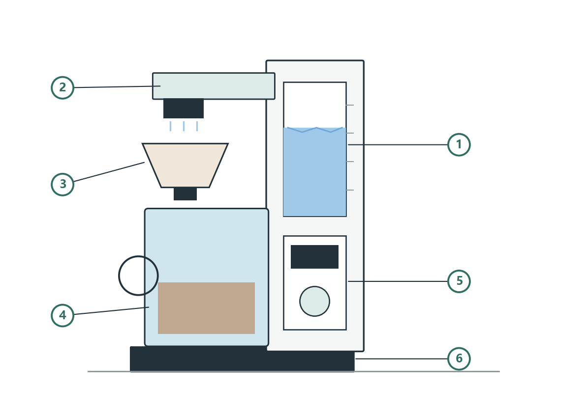
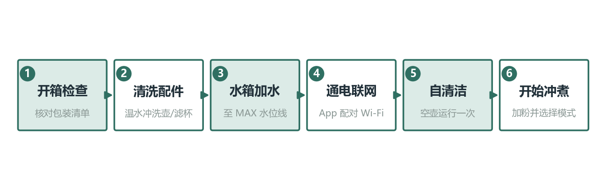
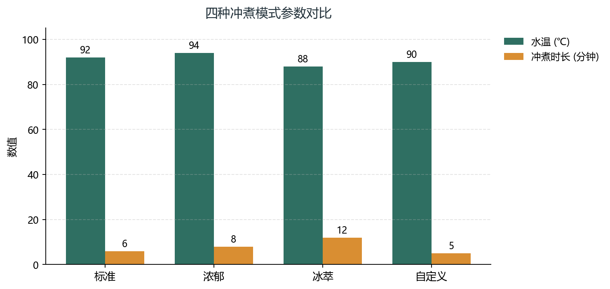

感谢您选购云杉智能 SS-350 智能手冲咖啡机。本机采用 9 点旋转注水臂模拟人工手冲，配合 PID 温控与分段注水曲线，可在 40~100℃ 范围内精准控温，让每一杯咖啡的风味稳定可复现。
SS-350 支持 App 远程控制、预约冲煮与语音联动；内置水质检测模块，当总溶解固体（TDS）偏高时会提醒更换滤芯。整机功率 1350W，水箱容量 1.2L，单次最大冲煮量 600ml，适合家庭日常使用。
本说明书涵盖安装使用、冲煮模式、智能功能、清洁保养与故障排查。请在首次使用前通读全文，并妥善保管以备查阅。
开箱后请先对照下表核对配件，如有缺失请拨打售后热线 400-800-12345（演示样例号码）。
| 部件 | 数量 | 备注 |
|---|---|---|
| 主机（含旋转注水臂） | 1 台 | — |
| 高硼硅玻璃咖啡壶（600ml） | 1 个 | 含壶盖与保温底座 |
| 陶瓷滤杯 | 1 个 | 兼容 V60 锥形滤纸 |
| 滤纸 | 1 包 | 50 张 / 包 |
| 量勺 | 1 支 | 10g / 平勺 |
| 清洁刷 | 1 支 | 用于注水臂出水口 |
| 使用说明书 / 保修卡 | 各 1 份 | 保修卡需在 App 内激活 |
下图标注了 SS-350 的主要部件。首次使用前，请确认各部件均已正确安装：玻璃壶放置于加热底座中央，滤杯卡入壶口上方，水箱注水不超过 MAX 水位线。

对应部件说明：
| 项目 | 规格 |
|---|---|
| 产品型号 | 云杉 SS-350 |
| 额定电压 / 频率 | 220V~ 50Hz |
| 额定功率 | 1350W |
| 水箱容量 | 1.2L |
| 最大冲煮量 | 600ml |
| 温控范围 | 40~100℃（PID 恒温） |
| 适用咖啡粉研磨度 | 中细研磨（细砂糖颗粒） |
| 产品尺寸 | 215 × 240 × 385 mm |
| 净重 | 3.6 kg |
| 无线连接 | Wi-Fi 2.4GHz / 蓝牙 5.0 |
| 工作噪音 | ≤ 52 dB(A) |
新机首次使用前，请按图 2 流程完成准备：先核对包装清单，用温水清洗玻璃壶与滤杯并擦干；向水箱加注纯净水至 MAX 水位线；接通电源，在 App 内完成 Wi-Fi 配对；随后选择「自清洁」模式空壶运行一次，以去除出厂残留。完成以上步骤即可开始首次冲煮。

AP 字样）；SS-350 预设四种冲煮模式，各模式的水温、时长与粉水比参数见下表，也同步展示于图 3。自定义模式可让您在 App 中编辑最多 12 段注水曲线。
| 模式 | 水温 | 冲煮时长 | 粉水比 | 适用场景 |
|---|---|---|---|---|
| 标准 | 92℃ | 6 分钟 | 1:15 | 日常均衡口味 |
| 浓郁 | 94℃ | 8 分钟 | 1:13 | 口感醇厚、高醇厚度 |
| 冰萃 | 88℃ | 12 分钟 | 1:10 | 冰咖啡 / 冷萃基底 |
| 自定义 | 90℃ | 5 分钟 | 1:12 | 按个人喜好编辑曲线 |

其中冰萃模式冲煮时长最长（12 分钟），通过较低水温（88℃）延长萃取时间，抑制苦涩物质析出；浓郁模式水温最高（94℃），适合深烘焙豆。切换模式后，App 会同步更新推荐研磨度。
在「云杉生活」App 中可以设定每天或每周的预约时间，如"每天早上 7:30 冲煮一杯标准咖啡"。设备到点自动启动，并保持玻璃壶保温 30 分钟。
SS-350 兼容主流智能音箱（小度 / 天猫精灵 / 小爱同学）。说出"帮我泡一杯浓郁咖啡"，设备将自动选择「浓郁」模式开始冲煮。
内置 TDS 检测探头会周期性评估水质。当滤芯使用达 3 个月或累计冲煮 120 次时，App 将推送更换提醒；更换后长按旋钮 5 秒可复位计数。
为保证出水顺畅与风味稳定，建议按下表周期清洁各部件。除垢操作：取专用除垢剂 20g 倒入水箱，加纯净水至 MAX，选择「除垢」程序运行两遍，最后用清水再运行一遍「自清洁」。
| 部件 | 清洁频率 | 方式 |
|---|---|---|
| 玻璃咖啡壶 | 每次使用后 | 中性洗剂手洗，勿进洗碗机 |
| 陶瓷滤杯 | 每次使用后 | 清水冲洗，必要时用软毛刷 |
| 水箱 | 每周 | 清水冲洗后擦干，勿用强碱洗剂 |
| 注水臂出水口 | 每月 | 用清洁刷疏通 9 个出水孔 |
| 加热底座 / 机身 | 每月 | 断电后用微湿软布擦拭 |
| 水质滤芯 | 每 3 个月 | 更换新滤芯（耗材，不在保修范围） |
| 现象 | 可能原因 | 处理方法 |
|---|---|---|
| 无法开机 | 电源插头未插紧 / 保险丝熔断 | 检查插座并重新插拔，更换保险丝 |
| 萃取偏淡 | 研磨过粗或粉水比偏低 | 调细至中细研磨，参照第六章粉水比 |
| App 无法连接 | 路由器为 5GHz 单频 | 切换到 2.4GHz 频段后重试 |
| 玻璃壶底部无水印 | 保温底座称重未校准 | 空壶放稳后长按旋钮 8 秒校准 |
| 冲煮中有轻微异响 | 水箱水位过低 | 停机补水至 MAX 后再启动 |
设备异常时，控制面板屏幕会显示错误代码。常见代码及处理方法见下表；若处理后仍无法恢复，请致电售后热线。
| 代码 | 含义 | 处理方法 |
|---|---|---|
| E01 | 水箱缺水 | 向水箱补水至 MAX 水位线后重启 |
| E02 | 水温传感器异常 | 断电静置 10 分钟后再开机；仍异常请联系售后 |
| E03 | 注水臂卡阻 | 断电后清理出水口残渣，转动注水臂排除异物 |
| E04 | 玻璃壶未就位 | 将玻璃壶放回加热底座中央并压实 |
| E05 | Wi-Fi 通信故障 | 重启路由器，在 App 中重新配对 |
自签收之日起，主机享有 24 个月免费保修，加热底座享有 36 个月保修；玻璃壶、滤杯等易损配件保修 6 个月；滤纸、滤芯等耗材不在保修范围内。详细保修政策与退换货说明，请参见《云杉智能售后服务手册》。
非正常使用、自行拆修、人为损坏或不可抗力导致的故障不在保修范围内。保修需出示有效购买凭证或 App 内电子保修卡。